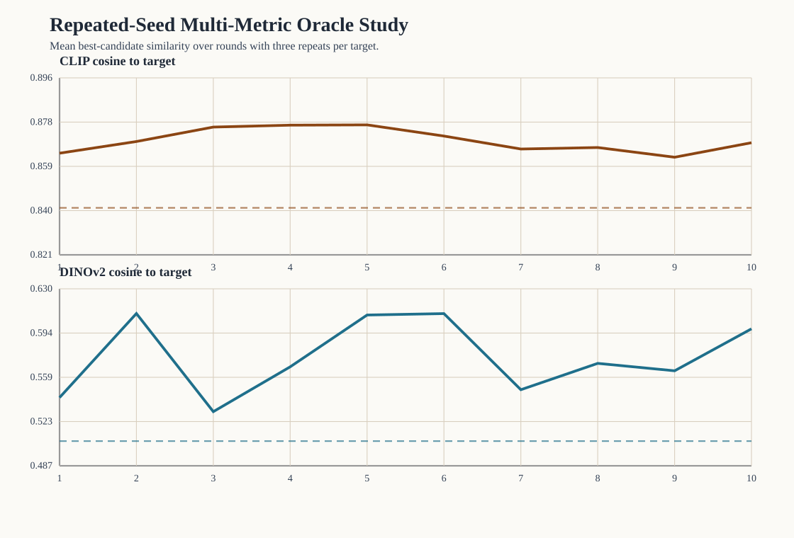

Repeated-Seed Multi-Metric Oracle Analysis
This study repeats the oracle target-recovery protocol three times per target and evaluates the resulting trajectories under two pretrained image-embedding families.
Scope
- targets:
3 - repeats per target:
3 - total runs:
9 - total rounds:
90
Aggregate summary
- CLIP cosine: baseline
0.841, final0.869, delta0.028(sd0.031) - DINOv2 cosine: baseline
0.507, final0.598, delta0.091(sd0.151)
Target-level summary
| target | repeats | clip final (mean ± sd) | dinov2 final (mean ± sd) |
|---|---|---|---|
| Black-and-white cat portrait | 3 | 0.871 ± 0.012 | 0.627 ± 0.075 |
| Mountain lake landscape | 3 | 0.826 ± 0.010 | 0.444 ± 0.060 |
| Red bicycle street photo | 3 | 0.910 ± 0.006 | 0.723 ± 0.014 |
Interpretation boundary
- CLIP remains the oracle selection metric.
- DINOv2 is added as an independent evaluation metric rather than an oracle.
- Repeated seeds reduce the chance that the observed trend is a single-session artifact.
- The study is still a proxy target-recovery evaluation, not a human-preference study.
Figure
